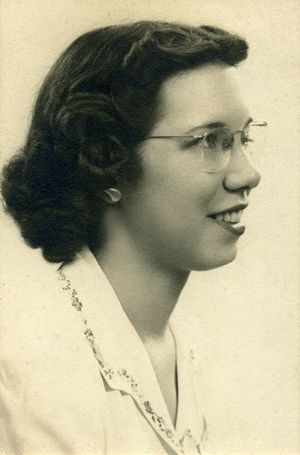
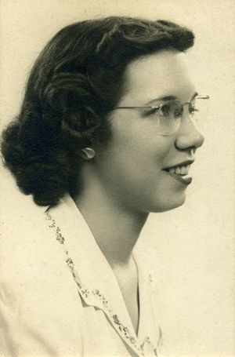
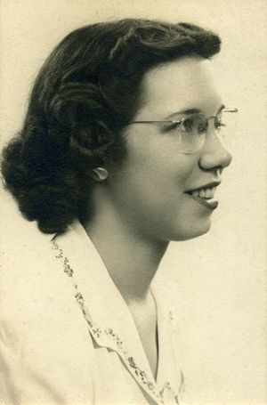
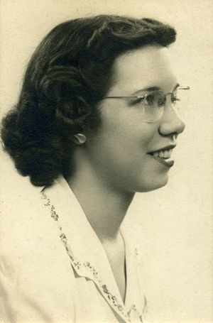

Betty foi uma das seis programadoras originais do ENIAC, o primeiro computador eletrônico digital de propósito geral.
Nascida Frances Elizabeth Snyder, na Filadélfia, em 1917, em seu primeiro dia de aula na Universidade da Pensilvânia, seu professor de matemática perguntou o que ela estava fazendo naquela sala ao invés de estar em casa tento filhos.
Dessa forma, ela foi estudar jornalismo, o que a possibilitaria viajar. Jornalismo era uma das poucas áreas abertas para mulheres nos anos 40.
Durante a Segunda Guerra Mundial, com tantos homens indo para o campo de batalha, o Exército precisava de mulheres para computar trajetórias balísticas. Betty foi então contratada pela Escola Moore de Engenharia, para trabalhar na área e logo ela foi escolhida para ser uma das seis mulheres que programariam o ENIAC.
← Voltar a página anterior ←